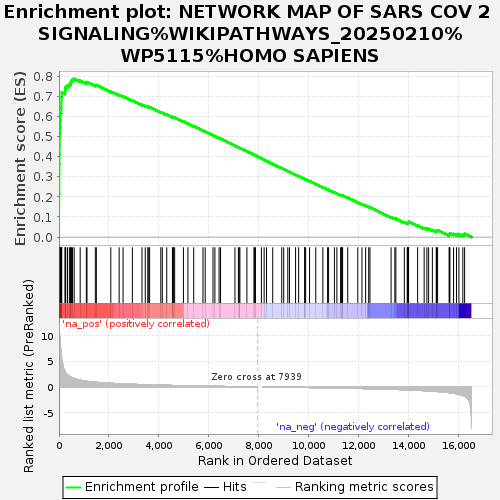

| | | Dataset | ranked_gene_list |
| Phenotype | NoPhenotypeAvailable |
| Upregulated in class | na_pos |
| GeneSet | NETWORK MAP OF SARS COV 2 SIGNALING%WIKIPATHWAYS_20250210%WP5115%HOMO SAPIENS |
| Enrichment Score (ES) | 0.7864726 |
| Normalized Enrichment Score (NES) | 2.463477 |
| Nominal p-value | 0.0 |
| FDR q-value | 0.0 |
| FWER p-Value | 0.0 |
Table: GSEA Results Summary

Fig 1: Enrichment plot: NETWORK MAP OF SARS COV 2 SIGNALING%WIKIPATHWAYS_20250210%WP5115%HOMO SAPIENS
Profile of the Running ES Score & Positions of GeneSet Members on the Rank Ordered List
| SYMBOL | RANK IN GENE LIST | RANK METRIC SCORE | RUNNING ES | CORE ENRICHMENT | | 1 | MX1 | 1 | 12.382 | 0.0547 | Yes |
| 2 | IFI44L | 2 | 12.200 | 0.1087 | Yes |
| 3 | IFI6 | 3 | 12.140 | 0.1624 | Yes |
| 4 | IFI27 | 6 | 11.662 | 0.2139 | Yes |
| 5 | IFITM1 | 11 | 11.304 | 0.2636 | Yes |
| 6 | IFIT1 | 12 | 11.254 | 0.3134 | Yes |
| 7 | BST2 | 14 | 11.060 | 0.3623 | Yes |
| 8 | IRF9 | 17 | 10.881 | 0.4103 | Yes |
| 9 | STAT1 | 23 | 10.348 | 0.4557 | Yes |
| 10 | IFIH1 | 25 | 10.170 | 0.5007 | Yes |
| 11 | RIGI | 39 | 9.433 | 0.5416 | Yes |
| 12 | APOL1 | 54 | 8.637 | 0.5790 | Yes |
| 13 | IFITM3 | 58 | 8.337 | 0.6157 | Yes |
| 14 | LGALS3BP | 91 | 6.281 | 0.6415 | Yes |
| 15 | TNFSF10 | 94 | 6.171 | 0.6687 | Yes |
| 16 | MYD88 | 95 | 6.167 | 0.6959 | Yes |
| 17 | MOV10 | 110 | 5.387 | 0.7189 | Yes |
| 18 | RRAS | 242 | 2.966 | 0.7240 | Yes |
| 19 | CFH | 252 | 2.859 | 0.7361 | Yes |
| 20 | IL33 | 269 | 2.755 | 0.7474 | Yes |
| 21 | SERPINE1 | 340 | 2.337 | 0.7534 | Yes |
| 22 | CCL5 | 415 | 2.044 | 0.7579 | Yes |
| 23 | TRO | 458 | 1.921 | 0.7639 | Yes |
| 24 | CEBPB | 473 | 1.886 | 0.7714 | Yes |
| 25 | PTGS2 | 498 | 1.845 | 0.7781 | Yes |
| 26 | CCL2 | 541 | 1.751 | 0.7832 | Yes |
| 27 | ADAM9 | 607 | 1.628 | 0.7865 | Yes |
| 28 | CFI | 847 | 1.312 | 0.7777 | No |
| 29 | CXCL2 | 1093 | 1.122 | 0.7677 | No |
| 30 | FOS | 1119 | 1.093 | 0.7710 | No |
| 31 | CD14 | 1453 | 0.908 | 0.7547 | No |
| 32 | CD226 | 1494 | 0.888 | 0.7562 | No |
| 33 | CXCL16 | 2073 | 0.704 | 0.7240 | No |
| 34 | CTSL | 2406 | 0.620 | 0.7065 | No |
| 35 | FAM98A | 2563 | 0.581 | 0.6995 | No |
| 36 | CXCL1 | 2934 | 0.505 | 0.6791 | No |
| 37 | CAMK4 | 3320 | 0.441 | 0.6576 | No |
| 38 | GTSE1 | 3451 | 0.417 | 0.6515 | No |
| 39 | IKBKG | 3556 | 0.403 | 0.6469 | No |
| 40 | RTN4 | 3567 | 0.400 | 0.6481 | No |
| 41 | CLCC1 | 3625 | 0.392 | 0.6463 | No |
| 42 | CCNB1 | 4072 | 0.332 | 0.6206 | No |
| 43 | PIAS1 | 4132 | 0.326 | 0.6184 | No |
| 44 | IRF3 | 4310 | 0.304 | 0.6089 | No |
| 45 | COQ8B | 4538 | 0.276 | 0.5963 | No |
| 46 | OS9 | 4548 | 0.274 | 0.5970 | No |
| 47 | CFP | 4585 | 0.271 | 0.5960 | No |
| 48 | C1R | 4626 | 0.265 | 0.5947 | No |
| 49 | WDR74 | 4978 | 0.227 | 0.5743 | No |
| 50 | C1S | 5158 | 0.210 | 0.5643 | No |
| 51 | MDN1 | 5388 | 0.187 | 0.5511 | No |
| 52 | LARP1 | 5759 | 0.156 | 0.5292 | No |
| 53 | APOC1 | 5848 | 0.148 | 0.5245 | No |
| 54 | VPS18 | 6160 | 0.122 | 0.5060 | No |
| 55 | RAC1 | 6235 | 0.115 | 0.5020 | No |
| 56 | ITCH | 6404 | 0.103 | 0.4922 | No |
| 57 | SDF2 | 6462 | 0.098 | 0.4892 | No |
| 58 | VPS11 | 7039 | 0.058 | 0.4543 | No |
| 59 | IRAK1 | 7176 | 0.048 | 0.4462 | No |
| 60 | SRP19 | 7206 | 0.046 | 0.4446 | No |
| 61 | TRIM59 | 7236 | 0.044 | 0.4430 | No |
| 62 | HIF1A | 7516 | 0.026 | 0.4261 | No |
| 63 | NFATC3 | 7800 | 0.009 | 0.4089 | No |
| 64 | PITRM1 | 7817 | 0.008 | 0.4079 | No |
| 65 | VPS33A | 7859 | 0.005 | 0.4054 | No |
| 66 | HLA-DRB5 | 8096 | 0.000 | 0.3910 | No |
| 67 | EIF4A2 | 8206 | -0.003 | 0.3844 | No |
| 68 | NEK9 | 8301 | -0.008 | 0.3787 | No |
| 69 | PARP2 | 8549 | -0.022 | 0.3637 | No |
| 70 | JUN | 8910 | -0.045 | 0.3419 | No |
| 71 | GABARAPL2 | 8989 | -0.049 | 0.3374 | No |
| 72 | JAK1 | 9152 | -0.060 | 0.3277 | No |
| 73 | CTSZ | 9218 | -0.064 | 0.3241 | No |
| 74 | STEAP3 | 9463 | -0.081 | 0.3095 | No |
| 75 | MTOR | 9587 | -0.090 | 0.3024 | No |
| 76 | GGH | 9827 | -0.106 | 0.2883 | No |
| 77 | DDIT4 | 9836 | -0.106 | 0.2883 | No |
| 78 | AKT1S1 | 9866 | -0.109 | 0.2870 | No |
| 79 | INTS4 | 10022 | -0.122 | 0.2780 | No |
| 80 | VPS41 | 10271 | -0.141 | 0.2635 | No |
| 81 | NLRP1 | 10555 | -0.163 | 0.2470 | No |
| 82 | RHEB | 10744 | -0.178 | 0.2363 | No |
| 83 | SRP54 | 10784 | -0.181 | 0.2347 | No |
| 84 | EIF4EBP1 | 11016 | -0.203 | 0.2215 | No |
| 85 | PRKCQ | 11116 | -0.211 | 0.2164 | No |
| 86 | ACTG1 | 11264 | -0.225 | 0.2084 | No |
| 87 | ZAP70 | 11298 | -0.228 | 0.2074 | No |
| 88 | MLST8 | 11328 | -0.232 | 0.2066 | No |
| 89 | TP53I3 | 11345 | -0.233 | 0.2067 | No |
| 90 | SIGMAR1 | 11550 | -0.253 | 0.1954 | No |
| 91 | CASP8 | 11952 | -0.296 | 0.1722 | No |
| 92 | MAVS | 12119 | -0.313 | 0.1634 | No |
| 93 | VPS16 | 12266 | -0.330 | 0.1560 | No |
| 94 | C1QBP | 12388 | -0.343 | 0.1501 | No |
| 95 | EIF4E | 12440 | -0.350 | 0.1485 | No |
| 96 | RRM2 | 13284 | -0.466 | 0.0991 | No |
| 97 | HLA-DRB1 | 13434 | -0.490 | 0.0922 | No |
| 98 | CCNB2 | 13475 | -0.495 | 0.0919 | No |
| 99 | APOD | 13814 | -0.543 | 0.0737 | No |
| 100 | MAPK8 | 13929 | -0.569 | 0.0693 | No |
| 101 | NFKB2 | 13944 | -0.570 | 0.0709 | No |
| 102 | CASP9 | 13961 | -0.573 | 0.0725 | No |
| 103 | ATP13A3 | 13975 | -0.575 | 0.0742 | No |
| 104 | CASP3 | 13984 | -0.578 | 0.0763 | No |
| 105 | ITIH4 | 14345 | -0.653 | 0.0572 | No |
| 106 | MIB1 | 14607 | -0.722 | 0.0445 | No |
| 107 | PTPN6 | 14716 | -0.750 | 0.0412 | No |
| 108 | CXCL12 | 14786 | -0.771 | 0.0404 | No |
| 109 | BIRC5 | 14935 | -0.818 | 0.0350 | No |
| 110 | FYN | 15090 | -0.879 | 0.0295 | No |
| 111 | DEPTOR | 15108 | -0.886 | 0.0323 | No |
| 112 | G3BP2 | 15144 | -0.896 | 0.0342 | No |
| 113 | TOMM70 | 15605 | -1.109 | 0.0110 | No |
| 114 | VPS36 | 15625 | -1.120 | 0.0148 | No |
| 115 | GTF2F2 | 15635 | -1.126 | 0.0192 | No |
| 116 | ATE1 | 15784 | -1.235 | 0.0156 | No |
| 117 | JUNB | 15900 | -1.330 | 0.0145 | No |
| 118 | RPS6 | 15997 | -1.428 | 0.0150 | No |
| 119 | PMPCB | 16154 | -1.667 | 0.0128 | No |
| 120 | EGR1 | 16225 | -1.812 | 0.0165 | No |
Table: GSEA details [plain text format]
Fig 2: NETWORK MAP OF SARS COV 2 SIGNALING%WIKIPATHWAYS_20250210%WP5115%HOMO SAPIENS: Random ES distribution
Gene set null distribution of ES for NETWORK MAP OF SARS COV 2 SIGNALING%WIKIPATHWAYS_20250210%WP5115%HOMO SAPIENS